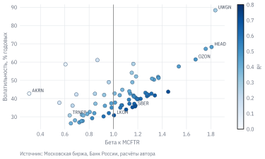
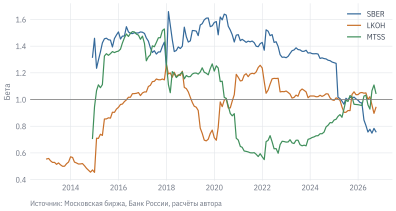
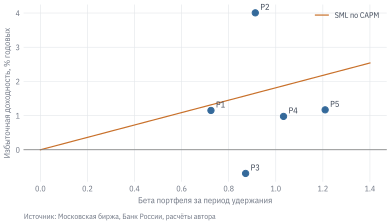
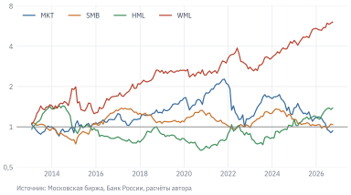

Код
import numpy as np
import pandas as pd
import matplotlib.pyplot as plt
import statsmodels.api as sm
from qf import data, plotДве акции за пять лет, с 31.10.2021 по 30.09.2026. Годовая волатильность месячных доходностей «Акрона» (AKRN) – 43%, Сбербанка (SBER) – 36%. По главе 4 рискованнее первая. Но инвестор, который держит не одну акцию, а широкий портфель, спросит иначе: насколько каждая бумага добавляет риска к тому, что у него уже есть? Здесь ответ обратный. Доходность Сбербанка на 71% объясняется движением всего рынка, и в падение рынка она падает сильнее его. Колебания «Акрона» почти не связаны с рынком: доля, объяснённая рынком, – всего 3%, и в диверсифицированном портфеле они во многом гасят друг друга.
Модель оценки капитальных активов (Capital Asset Pricing Model, CAPM) превращает это наблюдение в теорию: рынок платит премию только за тот риск, от которого нельзя избавиться диверсификацией. Мерой такого риска служит бета. CAPM – первая и до сих пор самая используемая модель ожидаемой доходности: по ней оценивают стоимость капитала компаний, результаты фондов, нормальную доходность в событийном анализе. При этом в данных она работает плохо. В этой главе мы разберём и то, и другое, а затем перейдём к факторным моделям, которые возникли как попытка объяснить то, что CAPM не объясняет.
Данные: stocks.parquet, indexes.parquet, ruonia.parquet (см. данные книги). Нужно знать: доходность, волатильность, коэффициент Шарпа (глава 4); касательный портфель (глава 11); линейная регрессия.
import numpy as np
import pandas as pd
import matplotlib.pyplot as plt
import statsmodels.api as sm
from qf import data, plotВ главе 11 мы нашли касательный портфель – портфель рискованных активов с наибольшим коэффициентом Шарпа (раздел 11.3). Каждый инвестор, по теореме о разделении, держит комбинацию этого портфеля и безрискового актива и различается только долей денег. Sharpe (1964 г.) и Lintner (1965 г.) сделали следующий шаг: предположили, что все инвесторы одинаково оценивают ожидаемые доходности и ковариации, могут занимать и давать в долг по безрисковой ставке и не несут издержек. Тогда у всех получится один и тот же касательный портфель. А раз все держат одни и те же рискованные активы в одинаковых пропорциях, в равновесии эти пропорции должны совпасть с долями активов в рыночной капитализации. Касательный портфель становится рыночным портфелем.
Допущения заведомо нереалистичны, и мы ещё увидим, как это проявляется в данных. Но вывод модели не зависит от деталей и интуитивно понятен, поэтому CAPM остаётся отправной точкой для любого разговора о премии за риск.
Главный результат CAPM – связь ожидаемой доходности актива \(i\) с его бетой:
\[ E[R_i] - r_f = \beta_i \bigl(E[R_M] - r_f\bigr), \qquad \beta_i = \frac{\operatorname{Cov}(R_i, R_M)}{\operatorname{Var}(R_M)}. \tag{12.1}\]
Здесь \(R_M\) – доходность рыночного портфеля, \(E[R_M] - r_f\) – рыночная премия за риск. Зависимость 12.1 на графике «бета – ожидаемая доходность» – прямая, её называют линией рынка ценных бумаг (security market line, SML). Она проходит через точку \((0, r_f)\) и точку рынка \((1, E[R_M])\).
Бета измеряет, на сколько в среднем меняется доходность актива при изменении доходности рынка на 1 п.п. Бета рынка равна единице. Акция с бетой 1,5 в среднем падает на 15%, когда рынок падает на 10%. Бета портфеля равна взвешенной сумме бет входящих в него активов.
Почему премию определяет бета, а не волатильность? Запишем доходность актива как сумму рыночной и собственной частей: \(R_i - r_f = \beta_i (R_M - r_f) + \varepsilon_i\). Тогда дисперсия раскладывается на две составляющие:
\[ \sigma_i^2 = \beta_i^2 \sigma_M^2 + \sigma_{\varepsilon_i}^2. \tag{12.2}\]
Первое слагаемое – систематический риск, общий для всех бумаг. Второе – специфический (идиосинкратический) риск: новости отдельной компании. В портфеле из многих бумаг специфические составляющие усредняются и почти исчезают, как мы видели в разделе 11.2. Систематический риск диверсификацией не убрать. Поэтому инвестор, который может бесплатно избавиться от специфического риска, не должен получать за него вознаграждение, а за систематический – должен.
Доля систематического риска в общей дисперсии – это \(R^2\) регрессии доходности актива на доходность рынка. У SBER из примера в начале главы она высокая, у AKRN – низкая.
Бету оценивают регрессией избыточной доходности акции на избыточную доходность рынка:
\[ R_{i,t} - r_{f,t} = \alpha_i + \beta_i \bigl(R_{M,t} - r_{f,t}\bigr) + \varepsilon_{i,t}. \tag{12.3}\]
Если CAPM верна, константа \(\alpha_i\) равна нулю. Оценённую константу называют альфой Йенсена: средняя доходность сверх той, что положена активу за его бету.
Практические решения при оценке:
adj_close у акций.SBER занимает в индексе MCFTR одну из самых больших долей. Будет ли его бета близка к единице, выше или ниже? Запишите оценку, потом запустите код.
def monthly_returns(prices):
"""Месячные доходности по ценам на конец месяца."""
r = prices.resample("ME").last().pct_change(fill_method=None)
r.index = r.index.astype("datetime64[ns]") # даты котировок хранятся с точностью до мс
return r
def monthly_rf(start):
"""RUONIA, начисленная за каждый календарный день месяца."""
ruonia = data.load_ruonia(start=start).set_index("date")["rate"]
days = pd.date_range(ruonia.index.min(), data.load_index("MCFTR")["date"].max())
return (1 + ruonia.reindex(days).ffill() / 100 / 365).resample("ME").prod() - 1
r_sber = monthly_returns(data.load_prices(["SBER"], start="2021-09-01")["SBER"])
r_mkt = monthly_returns(data.load_index("MCFTR", start="2021-09-01").set_index("date")["close"])
df = pd.concat([r_sber, r_mkt, monthly_rf("2021-08-01")], axis=1, keys=["sber", "mkt", "rf"])
df = df.dropna().iloc[-60:] # последние 5 лет
y = df["sber"] - df["rf"]
X = sm.add_constant(df["mkt"] - df["rf"])
capm_sber = sm.OLS(y, X).fit()
capm_sber.params.round(4)
#> const 0.0130
#> 0 1.1775
#> dtype: float64library(dplyr)
month_end <- function(df) df |>
mutate(month = format(date, "%Y-%m")) |>
group_by(month) |> slice_tail(n = 1) |> ungroup()
sber <- qf_load_stocks("SBER", start = "2021-09-01") |> month_end() |>
transmute(month, r = adj_close / lag(adj_close) - 1)
mkt <- qf_load_index("MCFTR", start = "2021-09-01") |> month_end() |>
transmute(month, m = close / lag(close) - 1)
rf <- qf_load_ruonia(start = "2021-08-01") |>
tidyr::complete(date = seq(min(date), max(qf_load_index("MCFTR")$date), by = "day")) |>
tidyr::fill(rate) |>
mutate(month = format(date, "%Y-%m")) |>
group_by(month) |> summarise(rf = prod(1 + rate / 100 / 365) - 1)
df <- sber |> inner_join(mkt, by = "month") |> inner_join(rf, by = "month") |>
na.omit() |> tail(60)
fit <- lm(I(r - rf) ~ I(m - rf), data = df)
round(coef(fit), 4)
#> (Intercept) I(m - rf)
#> 0.0130 1.1775Бета SBER – 1,18: в среднем акция движется на 18% сильнее рынка. С учётом стандартной ошибки бета с вероятностью около 95% лежит между 0,98 и 1,37. Даже на 60 наблюдениях это довольно широкий интервал. \(R^2\) = 0,71: рынок объясняет около 71% дисперсии доходности SBER.
Альфа за год – 15,5%. Это много, но t-статистика альфы – 1,8: на пяти годах данных такую альфу невозможно отличить от нуля. Альфы отдельных акций почти всегда оцениваются очень неточно, потому что средние доходности сами по себе шумные.
Частая ошибка – использовать в качестве рынка ценовой индекс IMOEX. Если повторить нашу регрессию с IMOEX, бета SBER почти не изменится – 1,19, – а альфа вырастет до 25,7% в год. Доходность акции с дивидендами сравнивается с доходностью рынка без дивидендов, и вся дивидендная доходность рынка, около 8–10% в год, записывается в альфу. Индекс рынка должен учитывать дивиденды так же, как ряд акции: adj_close – вместе с MCFTR.
Оценим ту же регрессию для всех акций снимка с полной пятилетней историей и сопоставим бету с общей волатильностью. Сначала подготовим месячные избыточные доходности всех акций и рынка – они понадобятся во всей главе.
R = monthly_returns(data.load_prices(start="2009-12-01"))
rf_m = monthly_rf("2010-01-01")
mkt_ex = (monthly_returns(data.load_index("MCFTR").set_index("date")["close"]) - rf_m).dropna()
ex = R.sub(rf_m, axis=0)
def capm_fit(y, x):
"""Регрессия избыточной доходности y на рынок x; None, если наблюдений меньше 24."""
d = pd.concat([y, x], axis=1, keys=["y", "x"]).dropna()
if len(d) < 24:
return None
return sm.OLS(d["y"], sm.add_constant(d["x"])).fit()
window = ex.index[-60:]
rows = {}
for t in ex.columns:
fit = capm_fit(ex.loc[window, t], mkt_ex)
if fit is not None and fit.nobs >= 48:
rows[t] = {"beta": fit.params["x"], "vol": ex.loc[window, t].std() * np.sqrt(12),
"r2": fit.rsquared}
B = pd.DataFrame(rows).Tfig, ax = plt.subplots()
sc = ax.scatter(B["beta"], B["vol"] * 100, c=B["r2"], cmap="Blues", vmin=0, vmax=0.8,
edgecolor="#23415F", linewidth=0.4, s=28)
for t in ["SBER", "AKRN", "TRNFP", "LKOH", "OZON", "HEAD", "UWGN"]:
ax.annotate(t, (B.loc[t, "beta"], B.loc[t, "vol"] * 100), fontsize=7,
xytext=(4, 2), textcoords="offset points")
ax.axvline(1, color="grey", linewidth=0.8)
ax.set_xlabel("Бета к MCFTR")
ax.set_ylabel("Волатильность, % годовых")
fig.colorbar(sc, ax=ax, label="R²")
plot.source(ax, "Московская биржа, Банк России, расчёты автора", offset=32)
plt.show()
У 70 акций беты лежат от 0,31 (AKRN) до 1,84 (UWGN), медиана – 1,09. Единице по определению равна средняя бета, взвешенная по капитализации, а простая медиана по бумагам может от неё отличаться. Связь беты с волатильностью есть (корреляция 0,66), но далеко не однозначная: при одинаковой волатильности бета может различаться вдвое. Типичная российская акция лишь на 46% движется вместе с рынком, остальное – специфический риск. Низкие \(R^2\) и беты чаще у бумаг с небольшим free float, где цена отражает в основном новости самой компании, а не рынка.
CAPM говорит об ожидаемой доходности, то есть о будущем. Бета, оценённая по прошлым данным, полезна, только если она достаточно устойчива. Посмотрим на скользящие беты трёх бумаг: банка, нефтяной компании и компании связи.
def rolling_beta(t, window=36):
pair = pd.concat([ex[t], mkt_ex], axis=1, keys=["y", "x"]).dropna()
cov = pair["y"].rolling(window).cov(pair["x"])
return (cov / pair["x"].rolling(window).var()).loc["2012":]
fig, ax = plt.subplots()
for t in ["SBER", "LKOH", "MTSS"]:
ax.plot(rolling_beta(t), label=t)
ax.axhline(1, color="grey", linewidth=0.8)
ax.set_ylabel("Бета")
ax.legend()
plot.source(ax, "Московская биржа, Банк России, расчёты автора")
plt.show()
Линии SBER и MTSS начинаются позже, чем у LKOH: их история в снимке книги начинается с ноября 2011 г., а окну нужны 36 месяцев. Бета каждой бумаги заметно меняется во времени: компании меняют бизнес и долговую нагрузку, меняется и состав рынка. В скользящем окне к этому добавляется ошибка оценки: один крупный месяц входит в окно и через три года выходит из него, сдвигая бету скачком.
Насколько прошлая бета предсказывает будущую? Сравним беты, оценённые на двух непересекающихся пятилетних периодах.
def betas(start, end):
w = ex.loc[start:end]
out = {}
for t in w.columns:
fit = capm_fit(w[t], mkt_ex)
if fit is not None and fit.nobs >= 48:
out[t] = fit.params["x"]
return pd.Series(out)
pair = pd.concat([betas("2016-01", "2020-12"), betas("2021-01", "2025-12")],
axis=1, keys=["b_past", "b_next"]).dropna()
persist = sm.OLS(pair["b_next"], sm.add_constant(pair["b_past"])).fit()
persist.params.round(2)
#> const 0.83
#> b_past 0.23
#> dtype: float64По 59 акциям с полной историей в обоих периодах корреляция прошлой и будущей беты – 0,34, а наклон регрессии – 0,23. Беты сильно возвращаются к среднему: бумага с высокой бетой в прошлом в следующем периоде в среднем имеет бету ближе к единице, с низкой – тоже ближе к единице. Отчасти это реальная изменчивость, отчасти – ошибка оценки: самые высокие и самые низкие оценки чаще всего завышены или занижены случайно.
Отсюда практическое правило Blume (1971 г.): прогноз беты сжимают к единице. Распространённая версия, которую использует, например, Bloomberg, – \(\beta_{\text{прогноз}} = 0{,}67\,\hat\beta + 0{,}33\). На российских данных за эти периоды возврат к среднему оказался ещё сильнее. Сжатие к среднему – тот же приём, что сжатие ковариационной матрицы в главе 11 (раздел 11.4): если оценка шумная, лучше сдвинуть её к разумному ориентиру.
Если CAPM верна, бумаги с более высокой бетой должны в среднем приносить больше. Проверим это так же, как Black и др. (1972 г.). В конце каждого года оценим беты всех акций по предыдущим 36 месяцам, разделим бумаги на пять групп по бете и будем держать каждую группу с равными весами следующие 12 месяцев. Сортировка по прошлой бете защищает от заглядывания вперёд: портфели формируются только по информации, доступной на дату решения.
groups = {k: [] for k in range(1, 6)}
for year in range(2012, 2027):
est = ex.loc[f"{year - 3}-01": f"{year - 1}-12"]
betas_window = {}
for t in est.columns:
fit = capm_fit(est[t], mkt_ex)
if fit is not None:
betas_window[t] = fit.params["x"]
q = pd.qcut(pd.Series(betas_window), 5, labels=range(1, 6))
hold = ex.loc[f"{year}-01": f"{year}-12"]
for k in range(1, 6):
groups[k].append(hold[q[q == k].index].mean(axis=1))
P = pd.DataFrame({k: pd.concat(v) for k, v in groups.items()}).dropna()
sml = pd.DataFrame({k: {"Бета": capm_fit(P[k], mkt_ex).params["x"],
"Доходность": P[k].mean() * 12,
"Альфа": capm_fit(P[k], mkt_ex).params["const"] * 12}
for k in P.columns}).Tprem = mkt_ex.loc[P.index].mean() * 12
fig, ax = plt.subplots()
ax.scatter(sml["Бета"], sml["Доходность"] * 100, s=40, zorder=3)
for k, row in sml.iterrows():
ax.annotate(f"P{k}", (row["Бета"], row["Доходность"] * 100), xytext=(5, 3), textcoords="offset points")
grid = np.linspace(0, 1.4, 10)
ax.plot(grid, grid * prem * 100, color="#C8702A", label="SML по CAPM")
ax.axhline(0, color="grey", linewidth=0.8)
ax.set_xlabel("Бета портфеля за период удержания")
ax.set_ylabel("Избыточная доходность, % годовых")
ax.legend()
plot.source(ax, "Московская биржа, Банк России, расчёты автора", offset=32)
plt.show()
Сортировка работает: беты портфелей за период удержания растут от 0,72 у первой группы до 1,21 у пятой. Средние доходности при этом с бетой не растут: у портфеля с самыми низкими бетами избыточная доходность 1,1% в год, с самыми высокими – 1,2%. Точки не выстраиваются вдоль восходящей прямой.
Но и сама линия SML на этом периоде почти горизонтальна. С 31.01.2012 по 30.09.2026 рыночная премия – средняя доходность MCFTR сверх RUONIA – составила лишь 1,8% в год. Стандартная ошибка этой оценки при волатильности рынка 20% за 15 лет – около 5,2%. Иначе говоря, на этих данных мы не можем уверенно сказать даже, была ли рыночная премия положительной, и тем более не можем отличить наклон SML от нуля. Российский рынок за последние 15 лет слишком короткий и волатильный, чтобы проверить CAPM с хорошей точностью.
На длинных данных американского рынка картина известна. Уже Black и др. (1972 г.) обнаружили, что SML более пологая, чем предсказывает CAPM: бумаги с низкой бетой приносят больше, чем положено, с высокой – меньше. Fama и French (2004 г.) подробно описывают, как накапливались эти свидетельства. Frazzini и Pedersen (2014 г.) объясняют пологую SML тем, что многие инвесторы не могут брать кредит: вместо того чтобы держать рыночный портфель с плечом, они покупают бумаги с высокой бетой и переплачивают за них. Стратегия «против беты», которая покупает бумаги с низкой бетой и продаёт с высокой, приносила положительную доходность на большинстве рынков.
Отклонение фактических средних от SML ещё не опровергает модель: средняя доходность – шумная оценка ожидаемой. Чтобы опровергнуть CAPM, нужен статистически значимый результат, а на коротких и волатильных данных его трудно получить в обе стороны. Честный вывод по российскому рынку: данные не подтверждают, что высокая бета вознаграждалась, но и не позволяют это надёжно отвергнуть.
CAPM и регрессия на рынок полезны не только для оценки премии за риск. Они позволяют отделить реакцию цены на конкретное событие от движения всего рынка. Этот метод – событийный анализ (event study) – один из самых распространённых в финансовых исследованиях (MacKinlay 1997 г.). С его помощью измеряют реакцию рынка на отчётность, дивиденды, слияния, смену рейтинга, санкции.
Схема такая.
Окна оценки и события не должны пересекаться: иначе событие влияет на оценку нормальной доходности.
30 июня 2022 г. годовое собрание акционеров «Газпрома» (GAZP) решило не выплачивать дивиденды за 2021 г., хотя рынок ожидал рекордной выплаты: совет директоров в мае рекомендовал её. Измерим реакцию цены.
gazp = data.load_prices(["GAZP"], start="2021-06-01", end="2022-08-31")["GAZP"]
gazp.index = gazp.index.astype("datetime64[ns]")
mkt_d = data.load_index("MCFTR", start="2021-06-01", end="2022-08-31").set_index("date")["close"]
daily = pd.concat([gazp.pct_change(), mkt_d.pct_change()], axis=1, keys=["gazp", "mkt"]).dropna()
est = daily.loc["2021-07-01":"2022-02-18"] # окно оценки: до февраля 2022 г.
mm = sm.OLS(est["gazp"], sm.add_constant(est["mkt"])).fit()
event = daily.loc["2022-06-23":"2022-07-08"].copy()
event["normal"] = mm.params["const"] + mm.params["mkt"] * event["mkt"]
event["AR"] = event["gazp"] - event["normal"]
event["CAR"] = event["AR"].cumsum()
(event * 100).round(1)
#> gazp mkt normal AR CAR
#> date
#> 2022-06-23 2.6 1.3 1.6 1.0 1.0
#> 2022-06-24 -2.5 -0.5 -0.4 -2.0 -1.0
#> 2022-06-27 0.1 1.1 1.3 -1.3 -2.3
#> 2022-06-28 0.3 -0.3 -0.2 0.6 -1.7
#> 2022-06-29 0.2 -1.3 -1.2 1.4 -0.3
#> 2022-06-30 -30.5 -7.3 -8.0 -22.5 -22.8
#> 2022-07-01 -7.0 0.1 0.2 -7.2 -30.1
#> 2022-07-04 -3.2 -0.1 0.1 -3.3 -33.4
#> 2022-07-05 5.9 1.0 1.3 4.7 -28.7
#> 2022-07-06 -1.0 -0.2 -0.1 -0.9 -29.6
#> 2022-07-07 1.3 0.4 0.6 0.7 -28.9
#> 2022-07-08 0.0 0.1 0.2 -0.2 -29.1В день собрания акция упала на 30,5%. Рынок в тот же день снизился на 7,3%, и при бете 1,11 нормальная доходность была сильно отрицательной. Аномальная доходность составила −22,5%, а за 30 июня – 4 июля, когда снижение продолжалось, накопленная – −33,0%.
Этот пример показывает три типичные трудности событийного анализа.
Обратите внимание на дивиденды. Падение цены в день отсечки – не событие, а механическое следствие выплаты, и adj_close его убирает. Здесь же выплаты не было, поэтому падение цены – реальная потеря акционеров, и поправка adj_close его не убирает (раздел 3.3).
С 1970-х годов исследователи находили группы бумаг, средние доходности которых не объясняются бетой. Такие закономерности назвали аномалиями. Самые известные из них:
Fama и French (1993 г.) предложили описывать доходности не одним рыночным фактором, а тремя: рынком, размером (SMB, small minus big) и стоимостью (HML, high minus low). Carhart (1997 г.) добавил моментум (WML, winners minus losers, у него – UMD):
\[ R_{i,t} - r_{f,t} = \alpha_i + \beta_i\,MKT_t + s_i\,SMB_t + h_i\,HML_t + w_i\,WML_t + \varepsilon_{i,t}. \tag{12.4}\]
Каждый фактор – это доходность портфеля, который покупает бумаги с высоким значением признака и продаёт бумаги с низким. Нагрузки \(s_i\), \(h_i\), \(w_i\) показывают, насколько акция похожа на маленькую, дешёвую или растущую. Если модель верна, альфа снова равна нулю: средняя доходность объясняется нагрузками на факторы и премиями за них.
Что представляют собой факторы – премию за риск или поведенческие ошибки инвесторов, – вопрос открытый. Фама и Френч считают маленькие и дешёвые компании более рискованными: в кризис они страдают сильнее. Альтернативное объяснение – систематические ошибки: инвесторы экстраполируют прошлые успехи и переплачивают за акции роста, недореагируют на новости и поэтому создают моментум. Для практики важно другое: факторная модель даёт более точную нормальную доходность, чем CAPM, и позволяет понять, за счёт чего фонд или стратегия получили результат.
Построим факторы на акциях снимка по схеме Фамы – Френча с упрощениями, которые требует небольшая выборка. Состав определяется только информацией на дату формирования. Если после покупки котировки исчезают, стоимость позиции фиксируем по последней доступной цене; при возобновлении торгов учитываем накопленное изменение. Капитал этой бумаги не передаём задним числом другим акциям. Это условная оценка фактора, а не обещание исполнения сделки: при длительной приостановке или делистинге нужен отдельный сценарий возврата средств. Отбор по цене закрытия также не гарантирует возможность исполнить все сделки по этой цене.
adj_close за год включает дивиденды, рост close – нет, и их отношение даёт доходность реинвестированных дивидендов. Бумаги делим на три группы: 30% с наименьшей доходностью (L), 40% средних, 30% с наибольшей (H).adj_close с конца месяца \(t-13\) до конца месяца \(t-2\), то есть за 11 месячных интервалов перед пропущенным месяцем \(t-1\) (доходность портфеля измеряем за месяц \(t\)). Последний месяц пропускают: на горизонте месяца доходности, наоборот, слегка разворачиваются. Группы – так же 30/40/30.stocks = data.load_stocks(columns=["adj_close", "close", "market_cap", "value_rub"])
def monthly(col, how="last"):
"""Широкая таблица поля col на конец месяца (how="sum" – сумма за месяц)."""
wide = stocks.pivot(index="date", columns="ticker", values=col).resample("ME")
out = wide.sum() if how == "sum" else wide.last()
out.index = out.index.astype("datetime64[ns]")
return out
adj, close, cap = monthly("adj_close"), monthly("close"), monthly("market_cap")
liq = monthly("value_rub", "sum").rolling(3).mean()
# На дату формирования нужна котировка именно последнего торгового дня.
daily_adj = stocks.pivot(index="date", columns="ticker", values="adj_close")
available = daily_adj.resample("ME").agg(lambda x: x.iloc[-1]).notna()
available.index = available.index.astype("datetime64[ns]")
# Пропуск не перераспределяет капитал: позиция оценивается по последней цене.
ret = adj.ffill().pct_change(fill_method=None)
div_yield = (adj / adj.shift(12)) / (close / close.shift(12)) - 1 # дивиденды за 12 мес.
momentum = adj.shift(1) / adj.shift(12) - 1 # в строке t-1: P(t-2) / P(t-13) - 1
def tercile(x):
lo, hi = x.quantile(0.3), x.quantile(0.7)
return np.where(x <= lo, "L", np.where(x > hi, "H", "M"))
def vw_return(g):
return np.average(g["r"], weights=g["cap"])
rows = []
for t, prev in zip(ret.index[13:], ret.index[12:-1]):
df = pd.DataFrame({"cap": cap.loc[prev], "dy": div_yield.loc[prev],
"mom": momentum.loc[prev], "liq": liq.loc[prev]}).dropna()
df = df.loc[available.loc[prev].reindex(df.index).fillna(False)]
df = df[df["liq"] > df["liq"].quantile(0.2)]
if len(df) < 30: # в ранние годы бумаг слишком мало для сортировок
continue
df["size"] = np.where(df["cap"] <= df["cap"].median(), "S", "B")
df["value"], df["trend"] = tercile(df["dy"]), tercile(df["mom"])
# Доходность присоединяем только после выбора состава и групп.
df["r"] = ret.loc[t].reindex(df.index)
assert df["r"].notna().all()
pv = df.groupby(["size", "value"]).apply(vw_return)
pm = df.groupby(["size", "trend"]).apply(vw_return)
rows.append({"date": t, "n": len(df),
"SMB": pv.loc["S"].mean() - pv.loc["B"].mean(),
"HML": (pv.loc[("S", "H")] + pv.loc[("B", "H")] - pv.loc[("S", "L")] - pv.loc[("B", "L")]) / 2,
"WML": (pm.loc[("S", "H")] + pm.loc[("B", "H")] - pm.loc[("S", "L")] - pm.loc[("B", "L")]) / 2})
F = pd.DataFrame(rows).set_index("date").loc["2013":]
F["MKT"] = mkt_ex.reindex(F.index)
F = F[["MKT", "SMB", "HML", "WML", "n"]]С 31.01.2013 по 30.09.2026 в расчёт каждого месяца попадали от 44 до 60 бумаг. 2013 г. выбран как начало потому, что раньше в снимке слишком мало бумаг с годовой историей. Даже так в каждом из шести портфелей в среднем 5–10 акций, и это нужно помнить при интерпретации: результат одной-двух компаний заметно сдвигает доходность портфеля.
def summary(x):
return pd.Series({"Доходность, % год.": x.mean() * 12 * 100,
"Волатильность, % год.": x.std() * np.sqrt(12) * 100,
"t-статистика": x.mean() / x.std() * np.sqrt(len(x)),
"Шарп": x.mean() / x.std() * np.sqrt(12)})
premia = F[["MKT", "SMB", "HML", "WML"]].apply(summary).T
ru = lambda v: f"{v:.2f}".replace(".", ",").replace("-", "−")
premia.style.format(ru)| Доходность, % год. | Волатильность, % год. | t-статистика | Шарп | |
|---|---|---|---|---|
| MKT | 1,60 | 20,16 | 0,29 | 0,08 |
| SMB | 0,95 | 11,61 | 0,30 | 0,08 |
| HML | 3,47 | 15,04 | 0,86 | 0,23 |
| WML | 14,87 | 18,20 | 3,03 | 0,82 |
fig, ax = plt.subplots()
for c in ["MKT", "SMB", "HML", "WML"]:
ax.plot((1 + F[c]).cumprod(), label=c)
ax.set_yscale("log")
ax.minorticks_off()
ax.set_yticks([0.5, 1, 2, 4, 8], labels=["0,5", "1", "2", "4", "8"])
ax.axhline(1, color="grey", linewidth=0.8)
ax.legend(ncol=4)
plot.source(ax, "Московская биржа, Банк России, расчёты автора")
plt.show()
Из четырёх факторов статистически значим только моментум: 14,9% в год при t-статистике 3,0. Премии размера (0,9%) и дивидендной доходности (3,5%) положительны, но с t-статистиками 0,3 и 0,9 неотличимы от нуля. Рыночная премия – 1,6% в год, тоже незначимая: за эти годы российские акции в целом заработали не больше денежного рынка. Корреляции между факторами низкие, по модулю не выше 0,19, то есть они описывают разные источники риска.
Сильный моментум на российском рынке согласуется с международными данными: это одна из самых устойчивых аномалий. Подробно стратегии моментума и их риски разбираются в главе 16. Но к этому результату нужно относиться с осторожностью по трём причинам. Выборка небольшая, и в каждом портфеле немного бумаг. Расчёт не учитывает издержек, а моментум требует большого оборота. Наконец, набор бумаг снимка составлен сегодня: хотя в него входят и снятые с торгов акции, полностью избавиться от ошибки выжившего нельзя (раздел 3.4).
Фактор HML у Фамы и Френча строится по отношению балансовой стоимости капитала к рыночной (B/M). Дивидендная доходность тоже измеряет «дешевизну», но иначе: компании, которые не платят дивидендов, попадают в группу с низкой доходностью, даже если они дёшевы по балансу. На российском рынке дивидендная доходность сильно зависит от политики государства как акционера и от отраслевых налогов, поэтому наш HML – это скорее фактор «дивидендных историй», чем классический фактор стоимости. Сравнивать его премию с американским HML напрямую нельзя.
Хорошая модель ожидаемой доходности должна делать две вещи: объяснять колебания доходностей (\(R^2\)) и обнулять альфы. Проверим, что добавляют факторы к CAPM на отдельных акциях: оценим для каждой бумаги регрессию на один рыночный фактор и на четыре фактора 12.4 и сравним результаты.
ex_m = ex.loc[F.index]
rows = []
for t in ex_m.columns:
d = pd.concat([ex_m[t].rename("y"), F[["MKT", "SMB", "HML", "WML"]]], axis=1).dropna()
if len(d) < 60:
continue
one = sm.OLS(d["y"], sm.add_constant(d[["MKT"]])).fit()
four = sm.OLS(d["y"], sm.add_constant(d[["MKT", "SMB", "HML", "WML"]])).fit()
rows.append({"ticker": t, "alpha_capm": one.params["const"] * 12, "alpha_4f": four.params["const"] * 12,
"r2_capm": one.rsquared_adj, "r2_4f": four.rsquared_adj,
"sig_capm": abs(one.tvalues["const"]) > 2, "sig_4f": abs(four.tvalues["const"]) > 2,
"s": four.params["SMB"], "h": four.params["HML"], "w": four.params["WML"]})
tests = pd.DataFrame(rows).set_index("ticker")
tests[["alpha_capm", "alpha_4f"]].abs().mean().round(3)
#> alpha_capm 0.091
#> alpha_4f 0.091
#> dtype: float64По 78 акциям с историей не менее пяти лет средний скорректированный \(R^2\) растёт с 0,30 у CAPM до 0,35 у четырёхфакторной модели. Факторы объясняют часть колебаний, которую рынок не объяснял, но большая часть дисперсии отдельной акции остаётся специфической. Средняя по модулю альфа почти не меняется: 9,1% и 9,1% в год. Значимых на 5%-м уровне альф – 4 у CAPM и 6 у четырёхфакторной модели. Столько примерно и должно получиться случайно, даже если все истинные альфы равны нулю: 5% от 78 – это 4.
Вывод похож на результат проверки CAPM: данных недостаточно, чтобы уверенно отличить одну модель от другой по альфам. В академических работах модели сравнивают не на отдельных акциях, а на десятках портфелей, отсортированных по разным признакам, и используют совместный тест всех альф (тест Гиббонса – Росса – Шанкена). Для учебных и практических задач факторная модель полезна прежде всего как способ описать бумагу или стратегию: нагрузки показывают, похожа ли она на маленькие компании, на дивидендные акции или на недавних победителей. Например, фонд, который обогнал рынок только за счёт высокой нагрузки на WML, не демонстрирует умения выбирать акции: он получил премию за моментум, которую можно было получить и проще.
adj_close и close).